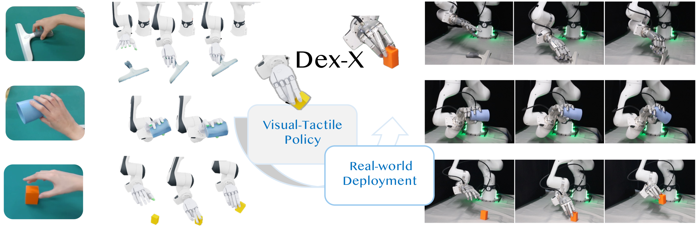
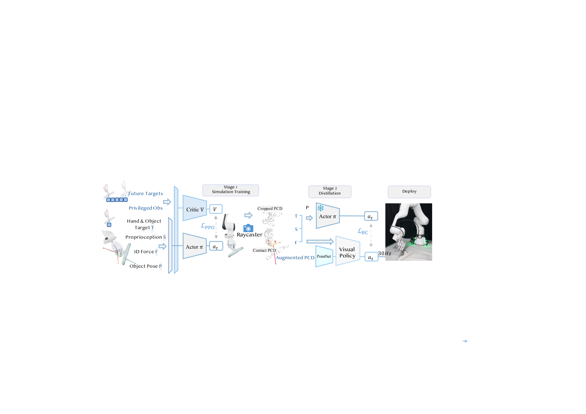
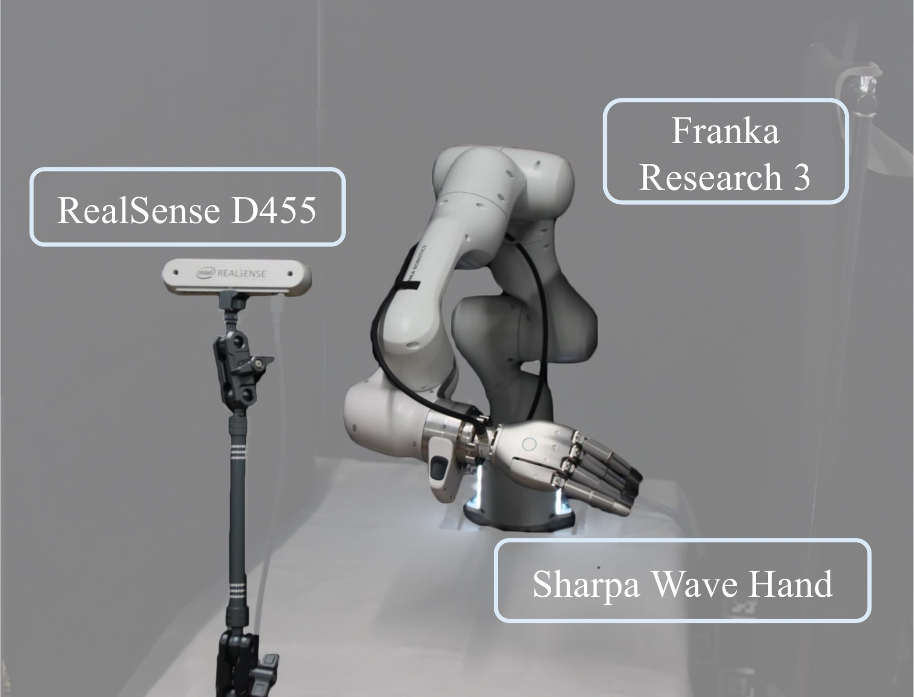

DEX-X learns deployable visual-tactile dexterous manipulation policies from human video demonstrations. It transfers human hand-object interactions into simulation, where tactile-aware reinforcement learning enriches visual demonstrations with contact information and learns deployable manipulation policies. The resulting policies transfer zero-shot to real-world grasping and tool-use tasks.
We present DEX-X, a framework for learning visual-tactile dexterous manipulation from human videos through simulation. Our key insight is that simulation can serve as a tactile completion engine. Given monocular human demonstrations, DEX-X reconstructs hand-object interactions in simulation, where physically grounded contact dynamics provide tactile supervision unavailable in the original videos. Leveraging this recovered tactile information, we train visual-tactile dexterous manipulation policies and distill them into deployable policies operating on point-cloud observations and tactile sensing.
We demonstrate zero-shot sim-to-real transfer on dexterous hand-arm platforms across diverse grasping and contact-rich tool-use tasks. The teacher policy achieves 65.9% average success across six task categories in simulation, while the distilled visual-tactile policy achieves 93% success on real-world cube picking and 53% on the challenging table-cleaning task. Zero-shot generalization to unseen object geometries is also observed across the evaluated tasks.
Our results suggest that simulated interaction is a key bridge between human videos and deployable dexterous manipulation policies, providing the missing physical supervision needed for scalable robot skill learning from Internet-scale human video data.

Training framework of DEX-X. After transferring human demonstrations into simulation, we train a privileged state-based expert using RL with demonstration references, object states, and tactile contact information. The expert is then distilled into a multi-task visual-tactile policy operating on a unified contact point cloud representation, which embeds fingertip tactile feedback into the scene geometry and fuses vision, touch, and proprioception for policy learning. The resulting policy transfers zero-shot to diverse real-world dexterous manipulation tasks.

Real-world hardware setup. We evaluate the proposed framework on a Franka Research 3 (FR3) arm with a Sharpa Wave dexterous hand (29 DoF per arm; 58 DoF in the bimanual configuration). Visual observations are provided by a fixed RealSense depth camera, while tactile feedback is collected from fingertip tactile sensors. All policies are trained in IsaacLab and deployed at 30 Hz.
Zero-shot real-world rollouts of the distilled visual-tactile policy on the Franka FR3 + Sharpa Wave platform.